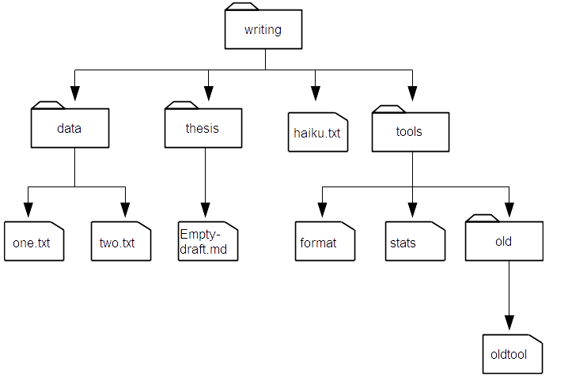

XWMOOC

REPL
Read-Evaludate-Print Loop
- 읽기(Read): 명령어 타이핑하고 엔터(enter)키를 입력
- 평가(Evaludate): 컴퓨터가 읽고, 실행
- 출력(Print): 결과를 출력한다.
- 반복(Loop): 읽기-평가-출력 과정을 로그 오프할때까지 반복
CRUD
Create-Retrieve-Update-Delete
- 생성(Create): 파일, 디렉토리, 코드 등 정보를 최초 만든다.
- 읽기(Retrieve): 이미 만들어진 파일, 디렉토리, 코드 등 정보를 읽어온다.
- 갱신(Update): 파일, 디렉토리, 코드 등 정보를 갱신한다.
- 삭제(Delete): 파일, 디렉토리, 코드 등 정보를 삭제한다.
| 현재 상태 파악 | 파일 상태 파악 |
|
|
| 편집과 복사 | 텍스트 편집기(editor) |
|
|
| 생성 | 삭제 |
|
|
| 데이터 | find & grep |
|  |
|